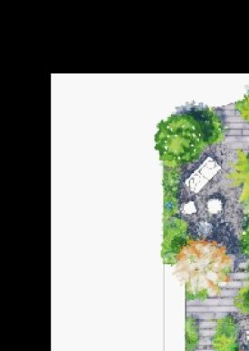
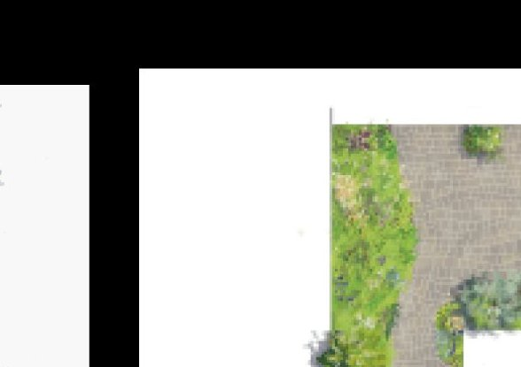
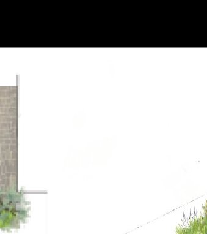

Selected projects
Each garden tells a story. Here are a few we've had the privilege to bring to life.

Inner Garden · 2024
Provence, France
A terraced garden embracing Provençal topography. The plant palette combines centuries-old olive trees with contemporary grasses, creating a dialogue between wild and controlled.

Outer Spaces · 2023
Geneva, Switzerland
A minimalist zen garden on the shores of Lake Geneva. Geometric topiaries, mirrored water features, and refined vegetation for a space of retreat and contemplation.

Inner Garden · 2024
Bordeaux, France
A layered urban garden with naturalistic planting. Perennial meadows, climbing walls, and a naturalistic pond creating an urban oasis.